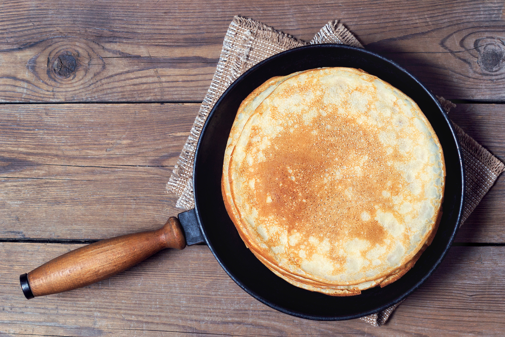

Не думайте, що робота з дріжджовим тестом — це довго і складно. Цей рецепт дозволить швидко приготувати пишні та пористі дріжджові млинці. Вироби виходять дуже ситними, а завдяки нейтральному смаку вони відмінно підходять як для солодких, так і для солоних начинок. Калорійність: 188 кКал/100г Порцій: 25 шт. Інгредієнти: 500 мл кефіру 2,5%; 3 курячих яйця; 250 г пшеничного борошна; 50 г вершкового масла; 2 ч.л. сухих дріжджів; 30 г цукру в піску; дрібка солі.